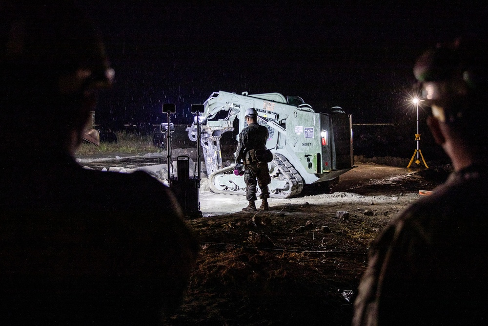

U.S. and Japanese crews are filling runway craters across four bases in Japan
U.S. Pacific Fleet said Saturday that Keen Sword 27 has more than 56,000 personnel from seven countries in Japan, including airfield damage repair at Iruma, Misawa, Marine Corps Air Station Iwakuni, and Kadena. Planner Cmdr. Jonathan Henson said the last Keen Sword kept that work on a tabletop, and this year multinational teams are filling hundreds of craters. At Iwakuni, Lt. j.g. Daysy Cruz-Cordero of Navy Mobile Construction Battalion 5 said Seabees are working the repairs with the Japan Self-Defense Force and U.S. Marines. Henson said the Misawa evolution is set to repair 120 craters over three days, around the clock. The official still shows a Marine with Marine Wing Support Squadron 171 directing a loader at Iwakuni on Oct. 22.